Travel &Films
Reisen, Natur und eigene Projekte – hier zeige ich meine Bildsprache in Films, Vlogs, Edits und Moving Stills. Dazu Reisefotografie aus Bosnien, Griechenland, Montenegro, den Alpen in der Schweiz und Österreich sowie aus Deutschland.
01 Video
Films & Vlogs
Vlogs und Filme von unterwegs – authentisch, nah dran und auf den Punkt geschnitten.

So hab ich meinen Seelenfrieden gefunden · Österreich Vlog


02 Video
Edits
Kurze, rhythmisch geschnittene Edits – Reisen, Fußball und gemeinsame Momente, in cineastischer Bildsprache.


03 Video
Moving Stills
Einzelne Szenen, color-graded und für sich stehend – Momente zwischen Foto und Film.
04 Fotografie
Photography
Reisen, Natur und Orte, die bleiben – Fotografie von unterwegs.
Bosnien 24 Fotos
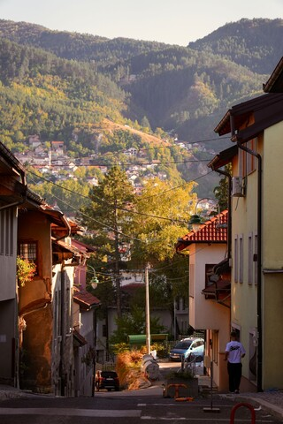
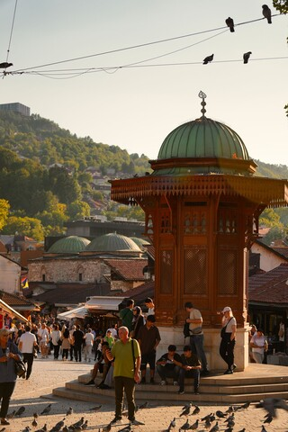
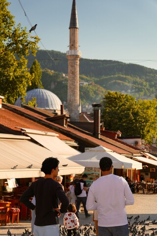
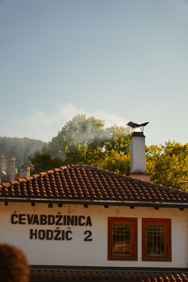
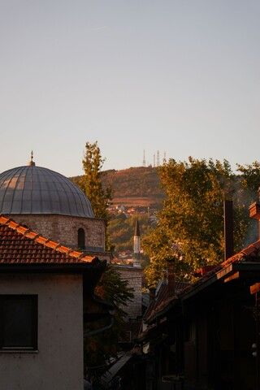
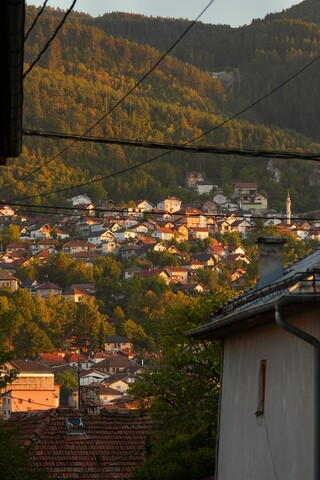
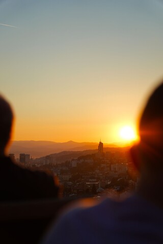
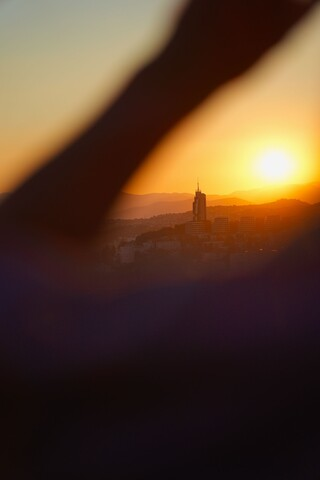
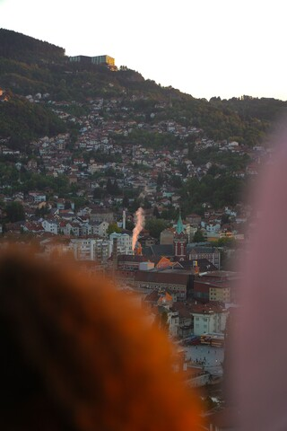
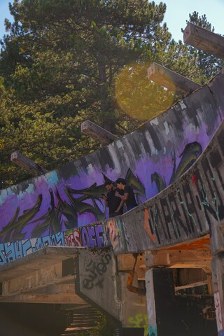
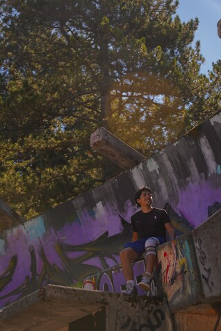
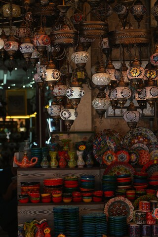
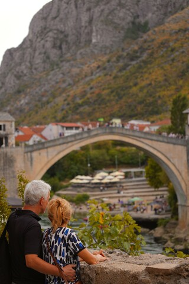
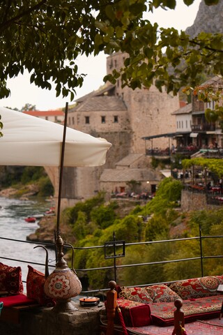
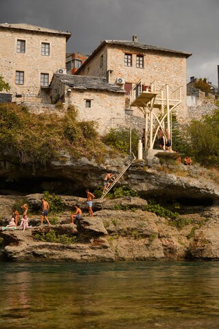
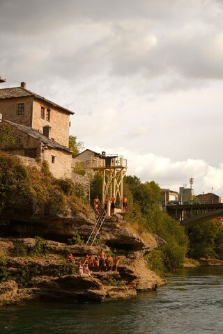
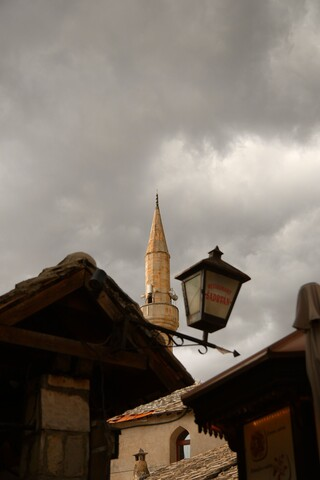
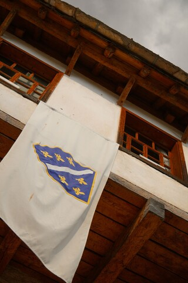
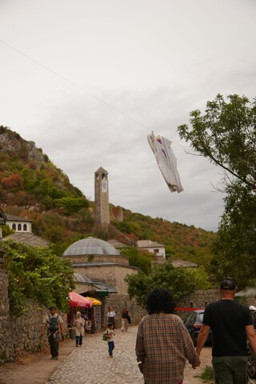
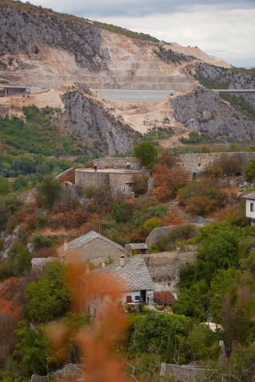
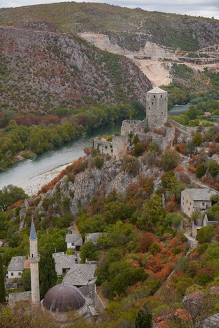
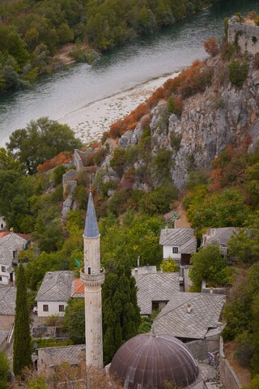
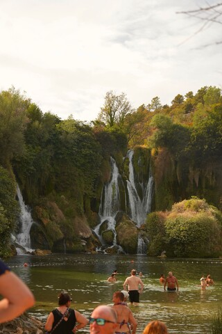
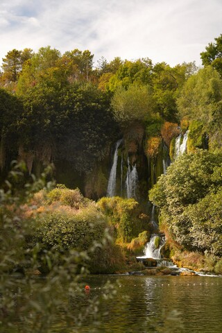


Griechenland 16 Fotos
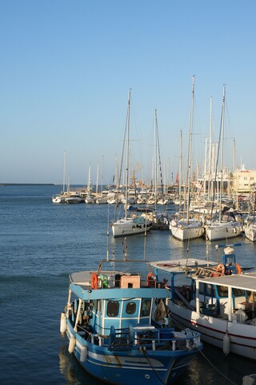
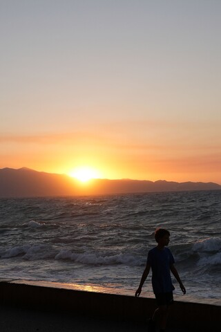
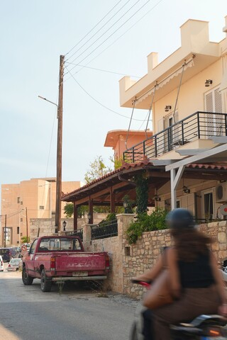
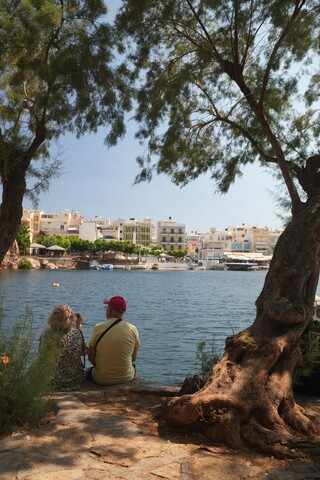
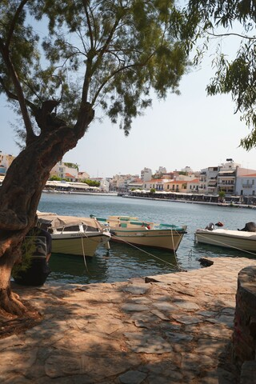
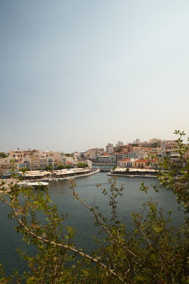
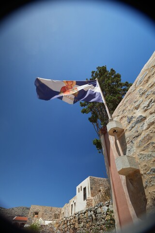
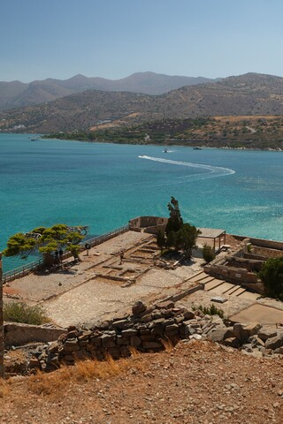
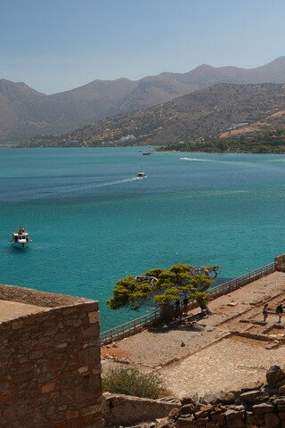
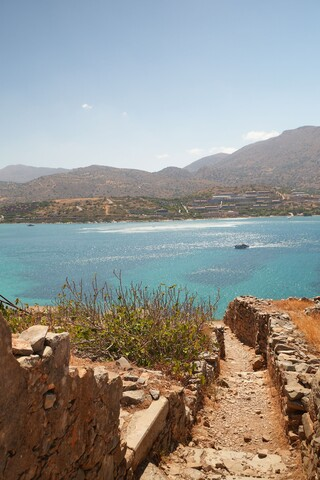
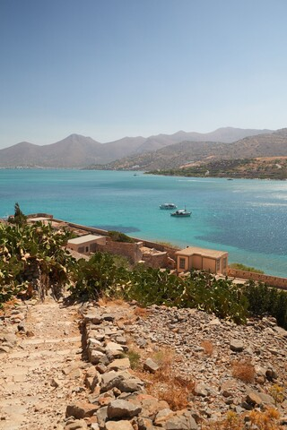
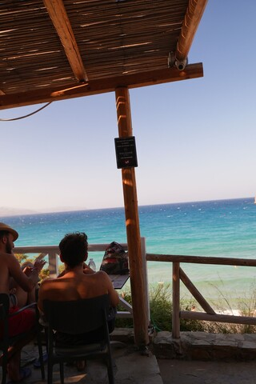
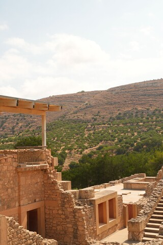
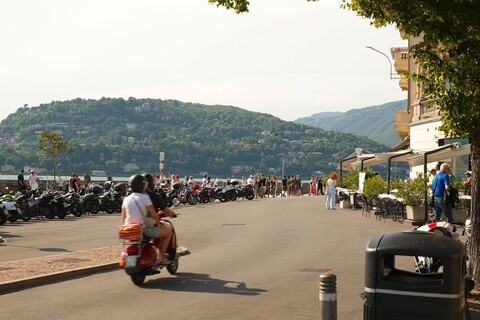
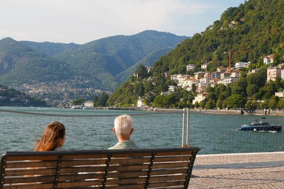
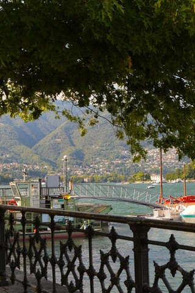


Montenegro 13 Fotos
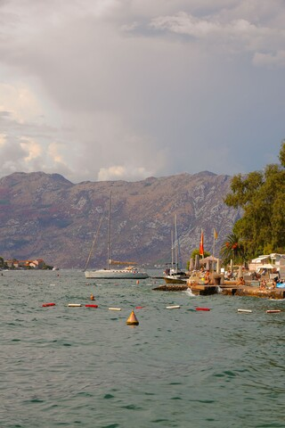
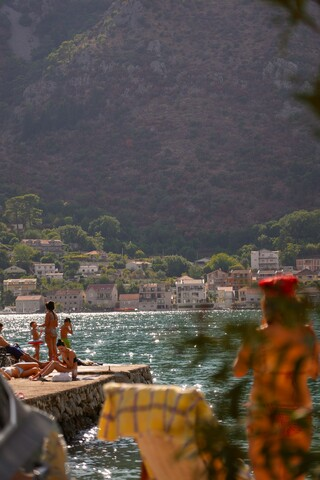
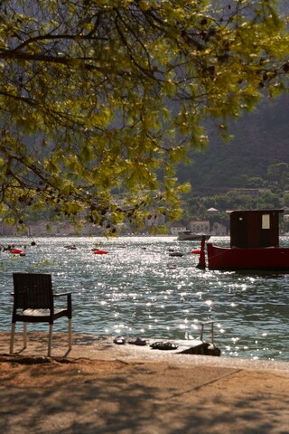
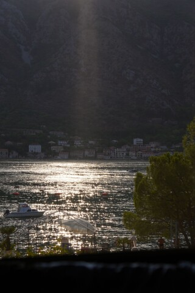
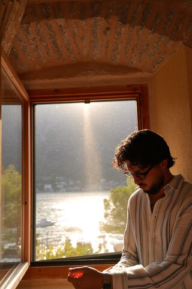
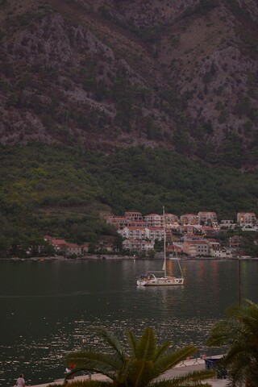
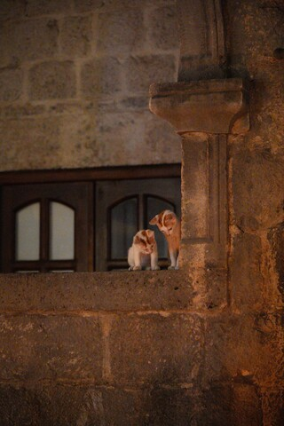
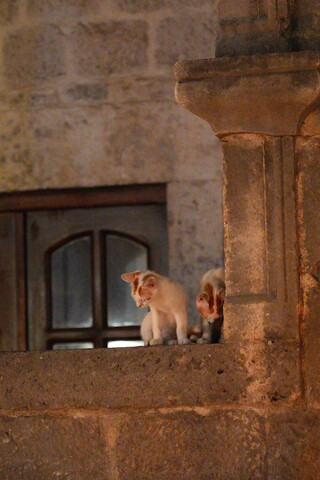
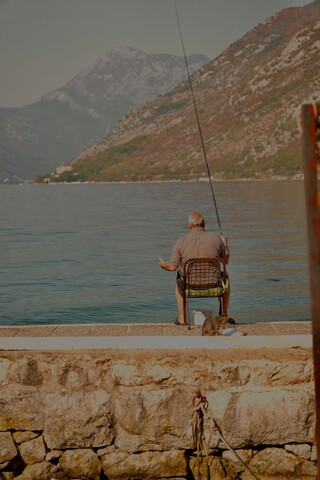
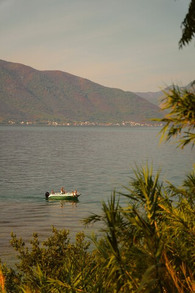